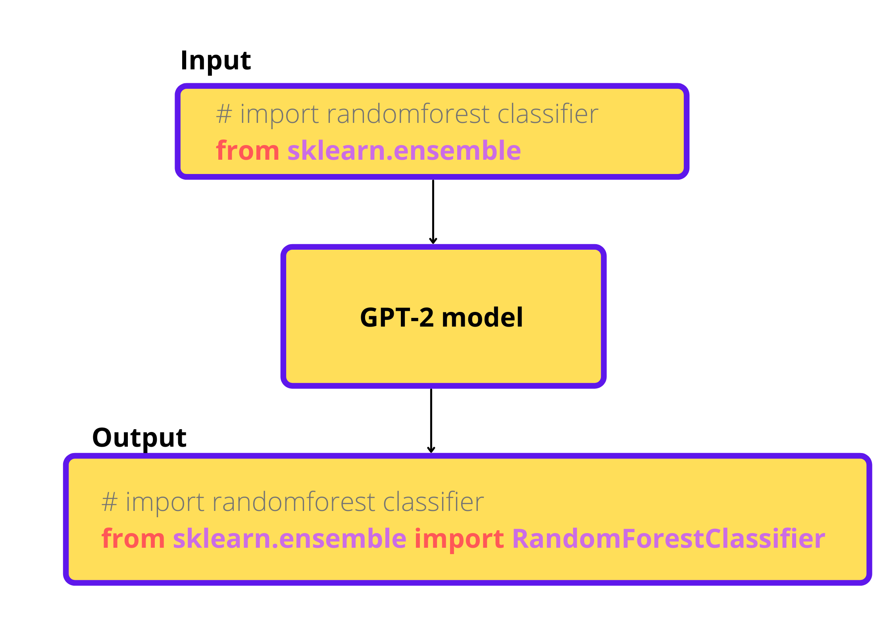

Causal language modeling¶
Causal language modeling is nothing but predicting the next token given a sequence of text. Here is an example showing how causal language modeling works:
If you give an input text like this: 'I am going' and you specify that you want the model to predict the next 2 tokens, the output will be like this - 'I am going to Mumbai'.
You can increase the number of tokens to be predicted as per your needs.
In this chapter we will not be training a model for completing english sentences, but code. Yes, you read it right, we are going to train a GPT-2 model from scratch for code completion.
When we give a partial code snippet, our model should autocomplete it.
Dataset¶
We will be using the stripped down version of the dataset used to train code parrot model. You can view the dataset by going here.
We will strip down it further becuase all the model training in this book is done using openly available platforms like kaggle and Google colab. If you have more compute, you can definitely go ahead with the complete dataset.
We will download the dataset and use 0.1% and 0.01% of the whole dataset for training and evaluation respectively.
from datasets import load_dataset
complete_ds = load_dataset("huggingface-course/codeparrot-ds-train")
# further strip down of the dataset
raw_datasets = complete_ds['train'].train_test_split(train_size=0.1, test_size=0.01, seed=42)
Note
This dataset only contain python code related to machine learning libraries like pandas, scikit-learn, matplotlib and seaborn. Hence, this model will work best for code snippets related to these libraries.
Now let’s load in our tokenizer. We cannot use normal tokenizers that are used for tokenizing natural languages like english because our dataset contain python code. So, we will use a tokenizer that was trained to tokenize python code:
from transformers import AutoTokenizer
tokenizer = AutoTokenizer.from_pretrained("huggingface-course/code-search-net-tokenizer")
We will write a function to tokenize our dataset. If we truncate our dataset, we will loose a lot of information. Instead, we will combine the rows in our dataset and divide it into chunks of length 128(as we did in the masked language modelling chapter).
After preprocessing the dataset, each row will have a length of 128.
Let’s tokenize a single example and see the outputs:
sample = raw_datasets['train']['content'][0]
tokenizer(
sample,
truncation=True,
max_length=128,
return_overflowing_tokens=True,
return_length=True,
)
Setting return_overflowing_tokens=True will split the sample into chunks. And we also return the sequence length for each chunk by setting return_length=True. Output of the tokenizer will contain the following things: ['input_ids', 'attention_mask', 'length', 'overflow_to_sample_mapping']
The 'length' key contains the length of each chunk and 'overflow_to_sample_mapping' key contains the sample or row to which the chunk belongs to. For example, if the first row in the dataset is split into 5 chunks of size 128, each chunk will have 'overflow_to_sample_mapping' equal to 0(index of first row).
Now let’s write the function to tokenize the whole dataset:
max_length = 128
def tokenize(examples):
outputs = tokenizer(
examples['content'],
truncation=True,
max_length=max_length,
return_overflowing_tokens=True,
return_length=True,
)
input_batch = []
for input_ids, length in zip(outputs['input_ids'], outputs['length']):
if length==max_length:
input_batch.append(input_ids)
return {"input_ids": input_batch}
As you can see, we only take chunks whose length is equal to max_length, i.e, 128. The rest of the chunks are dropped.
Another thing is that, we only return the input_ids, that is because we will be using a data collator which will automatically create the labels from these input_ids.
Now let’s apply the tokenization function to the whole dataset:
tokenized_datasets = raw_datasets.map(
tokenize,
batched=True,
remove_columns=raw_datasets['train'].column_names
)
Training the model¶
Now we will load the model and train it. All the previous chapters used a pretrained model which is loaded from a checkpoint, we were just fine-tuning it. But here we will load the GPT-2 model architecture without the pretrained weights, because GPT-2 is pretrained on english language which is very different from the dataset we have.
First we need to load all the required configurations for GPT-2 model:
from transformers import AutoConfig
# load configurations for GPT-2
config = AutoConfig.from_pretrained(
"gpt2",
vocab_size=len(tokenizer),
n_ctx=max_length,
bos_token_id=tokenizer.bos_token_id,
eos_token_id=tokenizer.eos_token_id,
)
All the required values for the configuration are loaded from the pretrained GPT-2’s configuration. We will overwrite some of them according to our usecase. Since we are using a separate tokenizer that tokenizes code, the length of the vocabulary will be different from what GPT-2 was trained on, so we need to overwrite that value with the length of our vocabulary.
Also, the token id for special tokens(like begining of sequence(bos), end of sequence(eos)) may be different, so we need to overwrite those with what our tokenizer uses. The default context length(n_ctx) that GPT-2 model uses is 1024, we have overwritten it to max_length, i.e, 128.
Now we can load the model using the above specified configuraion:
from transformers import GPT2LMHeadModel
# load the model from config
model = GPT2LMHeadModel(config)
We haven’t set any value for the pad_token in our tokenizer(data collator will throw an error otherwise). We will set the eos_token as our pad_token.
We will also load the data collator for language modelling,
from transformers import DataCollatorForLanguageModeling
tokenizer.pad_token = tokenizer.eos_token
collator = DataCollatorForLanguageModeling(tokenizer, mlm=False)
The data collator is same as what we used for masked language modeling, just setting mlm=False will make the collator ready for causal language modeling.
Everything is set up, the only part that is remaining is to train the model. We have a change for this chapter, we will be using the Trainer from transformers library to do the training for us.
We need to provide some arguments to the Trainer that will control the training of our model.
from transformers import TrainingArguments
# training arguments
args = TrainingArguments(
output_dir="model_outputs", # path to save outputs from training
per_device_train_batch_size=32, # batch size to use for training
per_device_eval_batch_size=32, # batch size to use for evaluation
evaluation_strategy="epoch", # evaluate after each epoch
gradient_accumulation_steps=8, # accumulate gradients for 8 batches and update the weights
num_train_epochs=1, # no. of epochs to train for
weight_decay=0.01, # weight decay for AdamW optimizer
learning_rate=5e-4,
fp16=True, # mixed precision for faster training
)
Now let’s pass the training arguments, model, tokenizer, data collator, training and evaluation sets to the trainer and start the training.
from transformer import Trainer
trainer = Trainer(
model=model,
tokenizer=tokenizer,
args=args, # training arguments
data_collator=collator,
train_dataset=tokenized_datasets['train'],
eval_dataset=tokenized_datasets['test'],
)
# start training
trainer.train()
I ran the training on kaggle notebooks and it took around 9-10 hours to complete whole training(1 epoch) and evaluation of the model.
Testing the model¶
Now let’s test the model and see if we can get any good results:
# input code
txt = """
# import random forest regressor from scikit-learn
from sklearn.ensemble import RandomForestRegressor
# fit random forest model with 300 estimators on X, y:
"""
# tokenize and move to GPU
inputs = tokenizer(txt, return_tensors='pt')
inputs = inputs.to('cuda')
# generate predictions with maximum length of 130
out = trainer.model.generate(**inputs, max_length=130)
# decode the predictions
print(tokenizer.decode(out[0]))
Output:
# import random forest regressor from scikit-learn
from sklearn.ensemble import RandomForestRegressor
# fit random forest model with 300 estimators on X, y:
X_train, X_test, y_train, y_test = train_test_split(X, y, test_size=.5, random_state=0)
# Fit classifier with all parameters
classifier = RandomForestRegressor(n_estimators=300, max_depth=3, n_estimators=100, random_state=0)
classifier.fit(X_train, y_train)
There are some mistakes in the output generated by the model, but since we used a small dataset and the model was trained from scratch, this looks decent enough.
And there you go, you have a machine companion for coding ;)